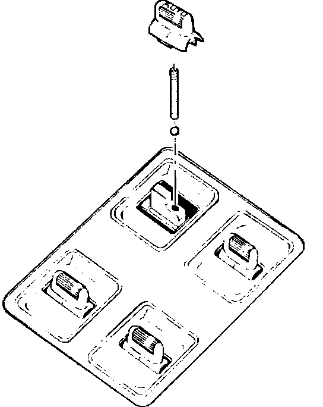

Power Window Switch - Cap Comes Off
90acura03YEAR MODEL VIN APPLICATION
'88 - 90 LEGEND ALL
December 21, 1990
BULLETIN NO
90-029

Cap Comes Off Power Window Switch
PROBLEM
The cap comes off the driver's power window switch.
CORRECTIVE ACTION
Install the parts listed under PARTS INFORMATION This does not require removing the door panel or switch.
1. Insert the new spring into the hole in the switch lever as far as it will go, and measure how much of it is left sticking out.
^ It the spring sticks out about 4 mm, the original ball is still in the hole.
^ If the spring sticks out only about 1 mm, the ball is missing; remove the spring, put the new ball into the hole, then put the new spring back in.
2. Set the new cap on the switch lever, then press down until it snaps into place.
PARTS INFORMATION
Auto knob set P/N 06357-SD4-A00
WARRANTY CLAIM INFORMATION
In warranty: The normal warranty applies.
Out-of-warranty: Any repair performed after warranty expiration may be eligible for goodwill consideration by the District Service Manager. You must request consideration, and get the DSM's decision, before starting work.
Operation number: 744105
Flat rate time: 0.2 hour
Failed P/N: 35750-SD4-A02ZB
Defect code: 018
Contention code: A02